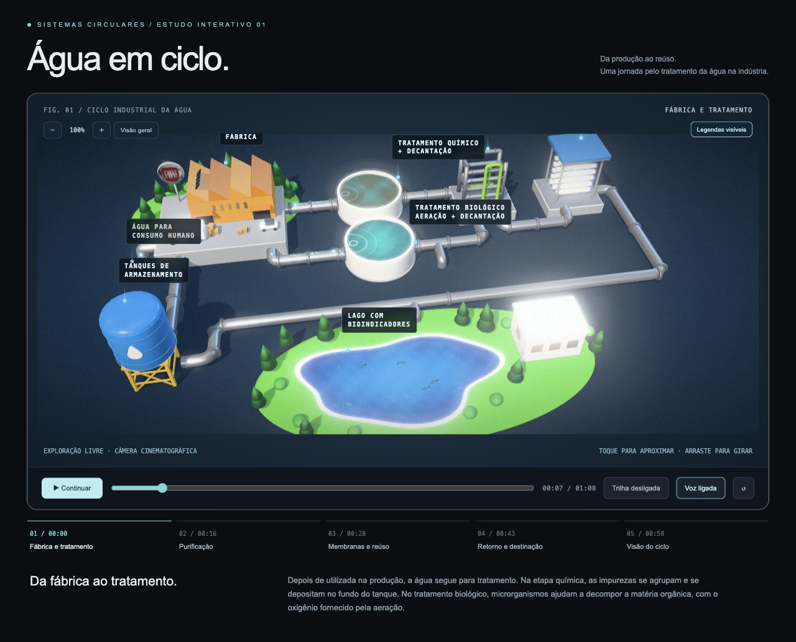

Guided narrative
The narrative has five chapters: factory and treatment; purification; membranes and reuse; return and destination; and an overview of the complete cycle.
FIAT · Interactive experience · Motion design
Water Cycle explains water treatment and reuse in FIAT’s industrial operations through an interactive 3D experience and motion videos.

The experience follows treatment, purification, membranes, storage and the paths toward reuse or final destination.
The 3D model shows the connections between treatment and reuse stages. Camera movements, labels and narration guide the explanation.
Interactive deliverable
A chapter-based journey guides the camera through the model. Visitors can pause, rotate, zoom and return to the overview to explore the system.
The narrative has five chapters: factory and treatment; purification; membranes and reuse; return and destination; and an overview of the complete cycle.
Camera controls and labels let visitors inspect the treatment stages beyond the narrated sequence.
Motion deliverables
The videos present the water cycle in landscape, 16:9, and portrait, 9:16, formats.